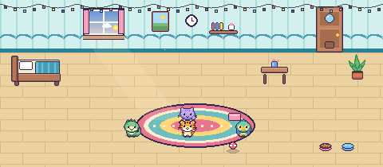
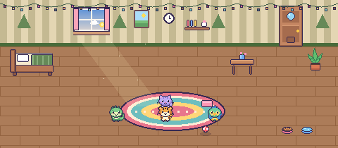
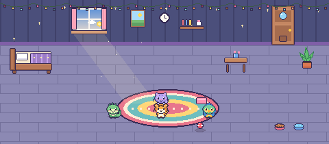
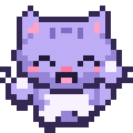
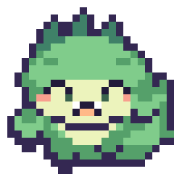
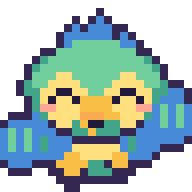
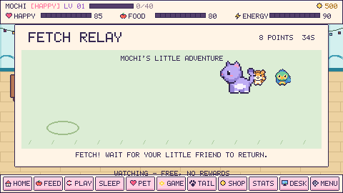
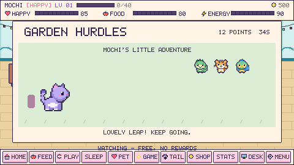
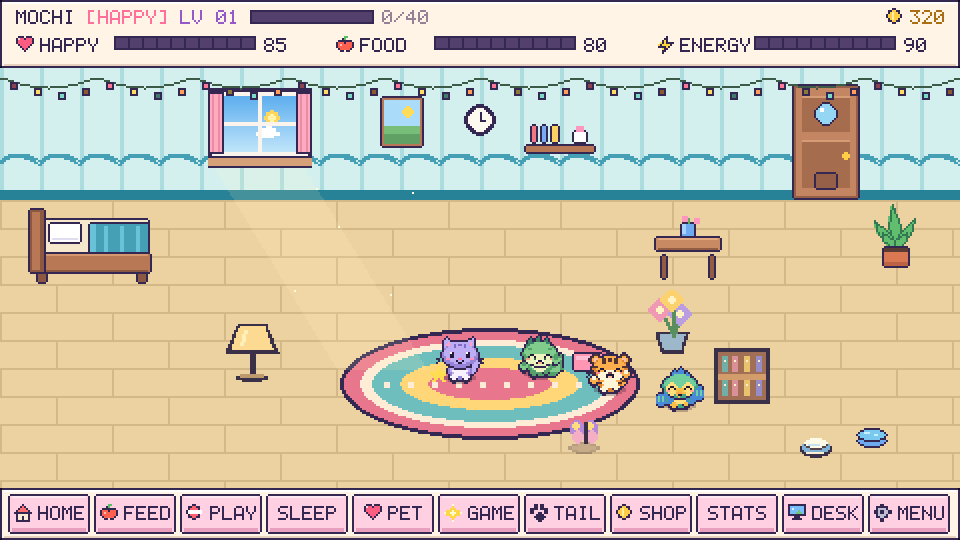
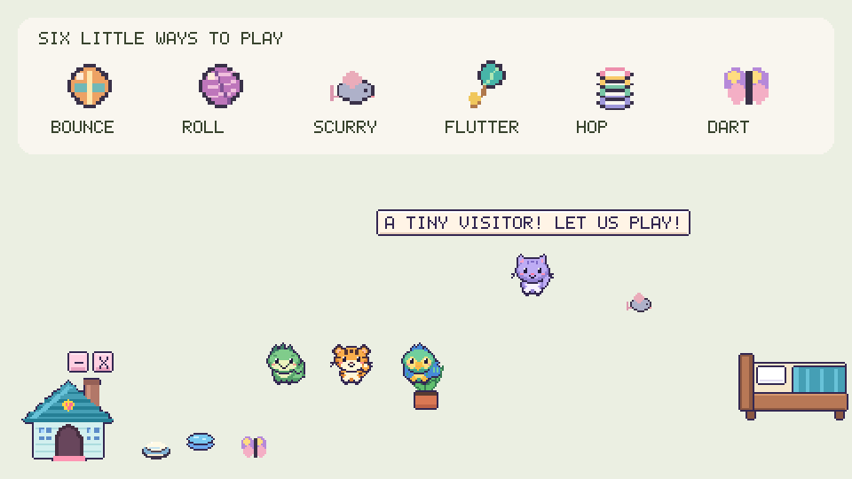

Meet My Little Pet Free, or make more room for adventure with Plus: a bigger family, a home you decorate, and toys with a life of their own. Read the quick guide →
SMALL COMPANION. BIG PERSONALITY.
A little friend. A lot of joy.✳
Make your everyday a little softer. A tiny pet to keep you company, celebrate the small things, and make your screen feel like home.
A little love goes a long way.Click Mochi to say hello!
REAL PET ART. EXTRA LARGE CUTENESS.
✦ Made for little breaks♡ No account needed✦ Your pet, your personality♡ Free edition + free Plus
FIND YOUR KIND OF CUTE
One little world. Seven very good friends.
A look inside Plus: start with a cat, earn new friends, and build a household of up to four pets. The Free download has its original pet collection.
Mochi the kitty is ready to meet you. Tap another pet to preview it.
A HELLO THAT’S JUST FOR YOU
Hi Rose! I’m Mochi. ♡
MOCHI ♥ ROSE
TWO NAMES. ONE LITTLE FRIENDSHIP.
Yours, from the very first hello.
You name your pet. Your pet remembers your name. Try the name preview here. Then meet your friend in the free mobile room.
THE BEST KIND OF DISTRACTION
Little moments. Lovely company.
There’s no rush. Just a small friend and a few things to smile about.
01 / PLUS · YOUR DESKTOP, A LITTLE HAPPIER
Let a little joy wander in.
Drag the house, bowls and ball anywhere on your Windows desktop. Shrink the house or hide the furniture for just-you-and-your-pet time. Click home and your friend walks inside before the room opens.
▤today’s ideas
things to do today make a little friend take a happy break ♡
⊞▣▧♡✦
Desktop mode illustration · Windows app
02 / CARE IS A LOVE LANGUAGE
♡
Feed. Play. Grow together.
Choose a free everyday bowl or a special meal. Care builds your bond; daily goals and skill games help you save for new friends. Levels bring new rooms.
HAPPINESS
98%
03 / A STYLE ALL THEIR OWN
Same little friend. A whole new look.
Three coats per pet. Bows, flowers and crowns. A cozy room that grows with you.
INSIDE PLUS · A CHANGE OF SCENERY
A little place. A whole new feeling.
Give your family a seaside escape, a woodland hideaway or a room among the stars. Buy each bundle once with earned coins, then switch whenever you like.

180 COINS
Seaside Cottage
Sea-glass walls. Sandy tiles. A soft blue bed.

260 COINS
Woodland Cabin
Warm timber. Forest colors. A cozy place to curl up.

400 COINS
Moon Suite
Starry wallpaper. Lavender tiles. Sweet little dreams.
Windows room previews · Bundles include walls, floor, bed and a matching Windows desktop house. Mobile Plus brings the room to touch screens; use landscape for a wide view or portrait for one-handed care.
One, two, tiny wiggle! ♫



YOUR OWN LITTLE HOUSEHOLD
INSIDE PLUS · A LITTLE MORE COMPANY
More friends. More little stories.
Name every friend. Take turns feeding them. Let them chat, dance, or have a friendly pillow duel — then curl up together.
No coins for endless clicking. Save up through daily care, thoughtful play and a little practice.
✿
Memory Garden
Watch the flowers light up. Repeat their growing pattern and see how much you remember.
45 seconds · Windows & mobile✦
Firefly Rhythm
Catch a golden moment. Tap as the firefly reaches the center — timing beats speed.
30 seconds · Windows & mobile♡
A slower kind of progress
Daily goals earn 12 coins. Arcade rounds award up to 8, with a 40-coin daily game limit. Cuddles stay free.
3 lives · 1 returns every 30 minutes · Free practice
INSIDE PLUS · LITTLE PAWS AT PLAY
Let them lead the adventure.
Little paws that fetch. Tiny friends that cheer. Play together, or watch your pet enjoy a happy break of their own.

01 / THROW. FETCH. HAPPY LITTLE TAIL.
Fetch relay
You choose where the ball lands. Your pet chases it down and brings it back for another turn.

02 / SMALL JUMPS. BIG CHEERS.
Garden hurdles
Help your little friend leap at the right moment. A missed jump is just a soft landing and another try.
♡
A little show, just for you. Watch mode lets your pet play on its own. It uses no lives and earns no coins. Both games are included in the Plus Windows app and installed mobile room.
Quiet time settles your pets while you work. Pause their little world, or bring everyone back with recovery controls.
♧
A personality. A friendship.
Playful, shy, sleepy or curious. Every pet keeps their own personality, and shared moments gradually turn neighbours into best friends.
✿
Put your heart into their home.
Try a rug, plant or pillow in the room before spending coins. Move owned decorations for free and make a cozy corner of your own.
Plus is free on Windows and mobile · The original Free edition is also on itch.io.
MY LITTLE PET◉ 20
Hi, Rose♡
Mochi is happy to see you.
✦
MOCHI · LEVEL 1
◒Feed✦Play☾Rest
A LITTLE HOME IN YOUR POCKET
Good company. Wherever you go.
Your phone gets a cozy pet room of its own. Open the free mobile room, make a friend, and add it to your Home Screen. No app store trip required.
Feed, play, rest and earn little rewards
Name up to four pets, with coats and accessories
Works offline after your first visit
Export a backup to keep your progress safe
Open free mobile room ↗Installable on Android & iPhone · Pet lives inside the app. Desktop and mobile progress are separate.
MEET MY LITTLE PET PLUS
A bigger world. Even littler paws.
A felt mouse darts past. Your cat gives chase. A little dino cheers from the bed you placed yourself. Make room for the stories that happen between your everyday moments.

Make their home your own. Move the bed, pick a room, place a plant, and welcome up to four named friends.

A little mischief comes included. Bouncing balls, rolling yarn and scurrying mice. Different toys invite different play.
Choose pet size, enjoy a quiet moment, change the room atmosphere and keep a backup of your little family. The Windows pet can wander over your desktop; the phone pet lives inside its room.
A little kindness goes a long way.
Everything is free. If these little paws make you smile, you can optionally support Teja Priyan. A donation never unlocks features or coins.
Yes. Free, Plus and the mobile room are all free. Pets, slots, lives and decorations use earned game coins. Optional donations support development and unlock nothing.
Can I change my name or my pet’s name?
Anytime. On Windows, open Menu → Owner + Pet Names. On mobile, open Settings → Your little family. Your progress stays with your pet.
Does the pet appear over my other apps?
The Windows app has a transparent desktop mode. Press D in your pet’s room to enter it; click the house to walk inside and return. On phones, your pet stays inside its app.
Does it work without the internet?
The Windows app works offline. On mobile, open the app online once and wait for “Ready for offline visits” before going offline. Your pet is saved on your device; clearing browser data removes that save. Use Export backup first.
Do my desktop and phone share the same pet?
They have separate local saves for now. Mobile backup files can be exported and restored in the mobile web app on another device. Automatic cloud sync is not included.
What can I play on Windows?
Catch the Bug, Treat Drop, Memory Garden and Firefly Rhythm. Mobile includes these games plus Treat Hunt. Both include Fetch Relay and Garden Hurdles. Three arcade lives refill over time; free practice stays available.